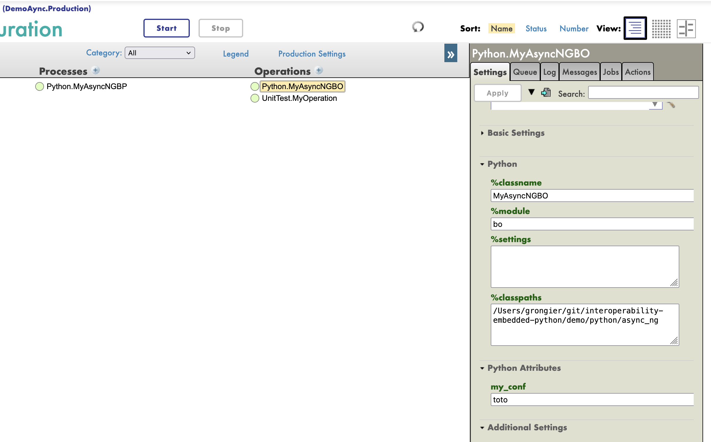
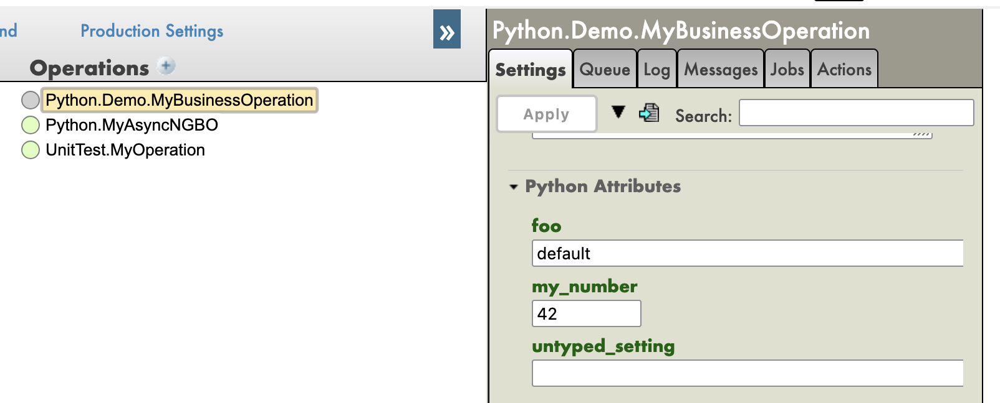

Settings in production
To pass production settings to your component, you have two options:
- Use the %settings parameter
- Create your custom settings
Context
In production when you select a component, you can configure it by passing settings.

Those settings can be passed to your python code.
Use the %settings parameter
All the settings passed to %settings are available in string format into your class as a root attribute.
Each line of the %settings parameter is a key-value pair separated by a the equal sign.
Key will be the name of the attribute and value will be the value of the attribute.
For example, if you have the following settings:
foo=bar
my_number=42
You can access those settings in your class like this:
from iop import BusinessOperation
class MyBusinessOperation(BusinessOperation):
def on_init(self):
self.log_info("[Python] MyBusinessOperation:on_init() is called")
self.log_info("[Python] foo: " + self.foo)
self.log_info("[Python] my_number: " + self.my_number)
return
As %settings is a free text field, you can pass any settings you want.
Meaning you should verify if the attribute exists before using it.
from iop import BusinessOperation
class MyBusinessOperation(BusinessOperation):
def on_init(self):
self.log_info("[Python] MyBusinessOperation:on_init() is called")
if hasattr(self, 'foo'):
self.log_info("[Python] foo: " + self.foo)
if hasattr(self, 'my_number'):
self.log_info("[Python] my_number: " + self.my_number)
return
Create your custom settings
If you want to have a more structured way to pass settings, you can create your custom settings.
To create a custom settings, you create an attribute in your class.
This attribute must :
- have an default value.
- don't start with an underscore.
- be untyped or have the following types:
str,int,float,bool.
Otherwise, it will not be available in the managment portal.
from iop import BusinessOperation
class MyBusinessOperation(BusinessOperation):
# This setting will be available in the managment portal
foo: str = "default"
my_number: int = 42
untyped_setting = None
# This setting will not be available in the managment portal
_my_internal_setting: str = "default"
no_aviable_setting
def on_init(self):
self.log_info("[Python] MyBusinessOperation:on_init() is called")
self.log_info("[Python] foo: " + self.foo)
self.log_info("[Python] my_number: " + str(self.my_number))
return
They will be available in the managment portal as the following:

If you overwrite the default value in the managment portal, the new value will be passed to your class.